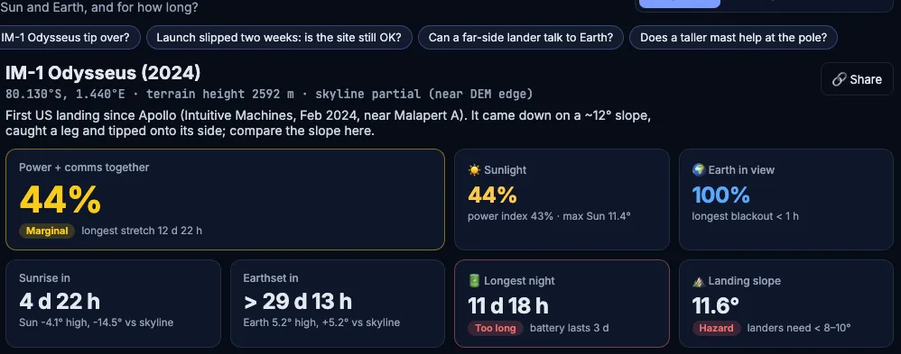
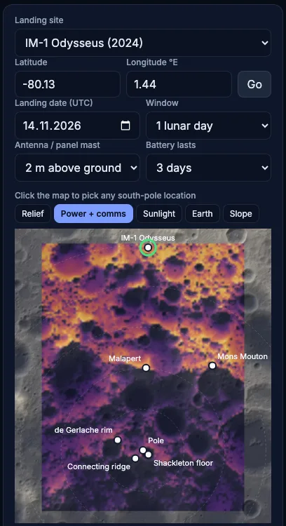
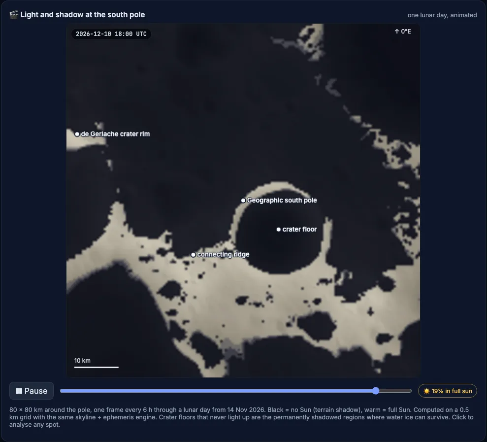
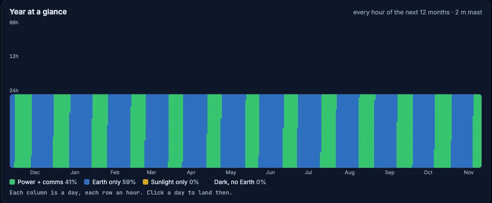
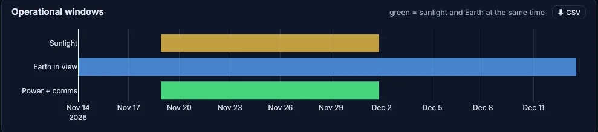

Why did IM-1 Odysseus tip over?
11.6° slope at its landing spot
Landers want less than 8–10°. Malapert's summit nearby: 1.8°. Horizon404 flags it as a hazard.
Power + comms %: share of time with sunlight and Earth in view together.
Next sunset and Earthset, the longest night, and whether your battery lasts it.
360° sky view: Sun and Earth paths against the real terrain skyline.
Best landing dates over 12 months, and landing slope safety.
Tweak the mission: mast height, battery, window. Compare sites side by side.



Suitability maps: power + comms, sun, Earth, slope
Animated light & shadow over a lunar day
Every hour of a year in one barcode Best landing dates for 12 months
Best landing dates for 12 months
Operational windows, CSV export, share links